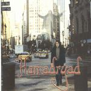

| Artist: | Hamadryad |
| Title: | Conservation Of Mass |
| Label: | Unicorn Records UNCR-5002 |
| Length(s): | 58 minutes |
| Year(s) of release: | 2000 |
| Month of review: | [05/2001] |
| 1) | Eternal Loop | 0.49 |
| 3) | Carved In Rust | 0.23 |
| 4) | Still They Laugh | 2.22 |
| 5) | The Second Round | 4.31 |
| 6) | Still They Laugh Part 2 | 2.25 |
| 8) | ...Action! | 9.39 |
| 10) | The Second Coming | 4.23 |
| 11) | Watercourse Hymn | 10.10 |
The short Carved In Rust nods slightly to Gentle Giant (because of the vocal harmonies), and functions as an introduction to Still They Laugh. This is a quieter, more soothly rolling piece. On some Arabian styled melodic lines we hear lyrics that do not fit that well with the music, but also some heavy mellotron here. We move right into the brimming organ dominated rock of The Second Round (thinking HEAVILY of Spocks Beard here). Plenty of neurotic variation here when the band alternates widely different melodies, vocal lines and rhythms. The guitar solo is sharp, but is hampered by a little gettingnowhereness. Then we return to Still They Laugh with Part 2 coming up. Great melodic stuff, nicely built-up. Very strong.
Shades Of Blue is a willowy flowing track, but with some unrestful vocals. The vocals are rather high on this dreamy track, which never loses its ethereal character.
Now we are coming to the more substantial pieces on the album. The first of these is ...Action! Driving progrock we find in the opening with some high falsetto wailing in the back. After a long guitar solo we come to a more rhythmic driven part. The dark keys are building atmosphere in the back.
Nameless is the longest track on the album. After a long intro the song more or less starts with some majestic Wakemanish keyboards (early Yes). The high pitched vocals also remind of Yes, although the vocals part is much more organ dominated. Time for some atmospherics with strong melodic somewhat wailing vocals. Pure symphonic prog jere and as tasty as many of newer Scandinavian bands.
Acoustic guitars do not always make for a quiet piece. The first part of this track is dominated (including some low bass), and later gets more playful with the advent of the piano. The vocals are very Yes-like. I am not too fond of this track.
The final track is the four parted Watercourse Hymn. After the instrumental first part we continue a bit in the style of The Flower Kings: vocal harmonies, nature and peace everywhere. And in that respect Yes is also not very far, but without the clear spark of THEIR earlier albums. I also find this track a bit lacking in striking melodies and vocal lines. Too bad about that.